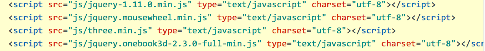
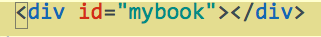
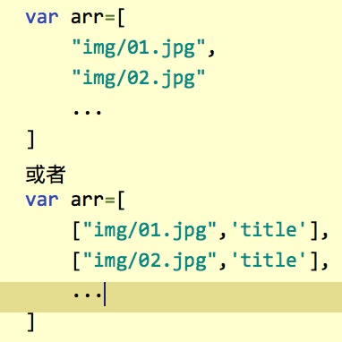
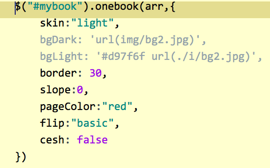
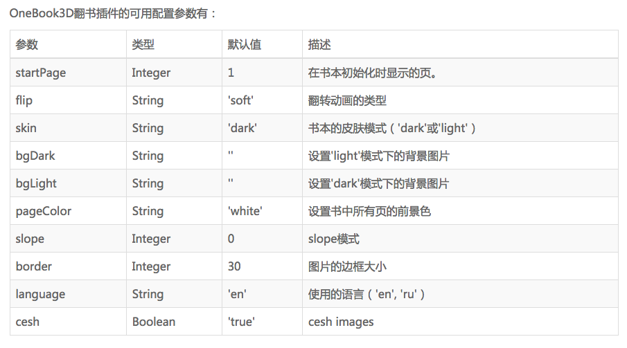

oneBook3D.js
介绍
翻书特效插件
OneBook3D是一款逼真的jQuery翻书特效插件;
该插件将多张图片或文件组合为书本杂志来进行翻页查看;
它支持webGL，可以应用在移动手机上，速度和性能都非常好.
在页面中引入jquery.onebook3d-2.3.0-full-min.js以及它相关的依赖文件：

使用一个div元素作为书本的容器即可:

首先将需要的图片放入一个数组中：

注:不兼容jpeg格式
在DOM元素加载完毕之后，通过onebook()方法来初始化该插件

主要参数：

效果：